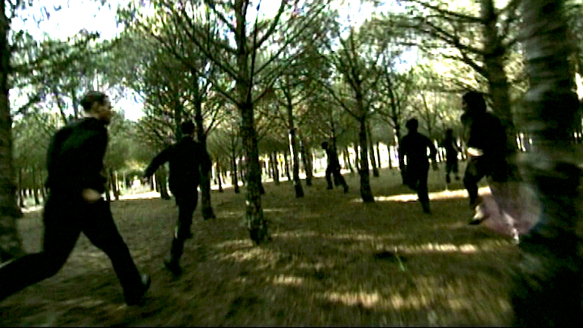

Films & Events
L'après-midi
(10 min,
2001,
Short Fiction)
A young woman confronts her inner demons in a surreal landscape.
Links
Team
For my first fiction short I was inspired by the surreal location - a pine tree forest at the beach in South France.
Main Cast
Victoria Deutschmann
Director, Screenwriter, Producer
Eva Stotz
Director of Photography
Benjamin Kempas
Sound
Emanuel Hoisl, Nora Kerkour
Sounddesign
Manfred Schmidt
Original Score
Martin Schubert
Festivals & Awards
- 1. Price International Video film festival Bochum
- 1. Price young talent contest VIVA VIVA
- German Youth & Video Award 2002 Ministerium für Jungend und Kultur
- Advancement Award for young artists Stadt Ulm
- Int'l Competition 5th BAYREUTHER FILMFEST “KONTRAST”
- German Competition 19th INTERFILM FESTIVAL BERLIN
- Official Selection 5th SHORTS WELCOME MUNICH
- Official Selection OVÀRVIDEO PORTO
